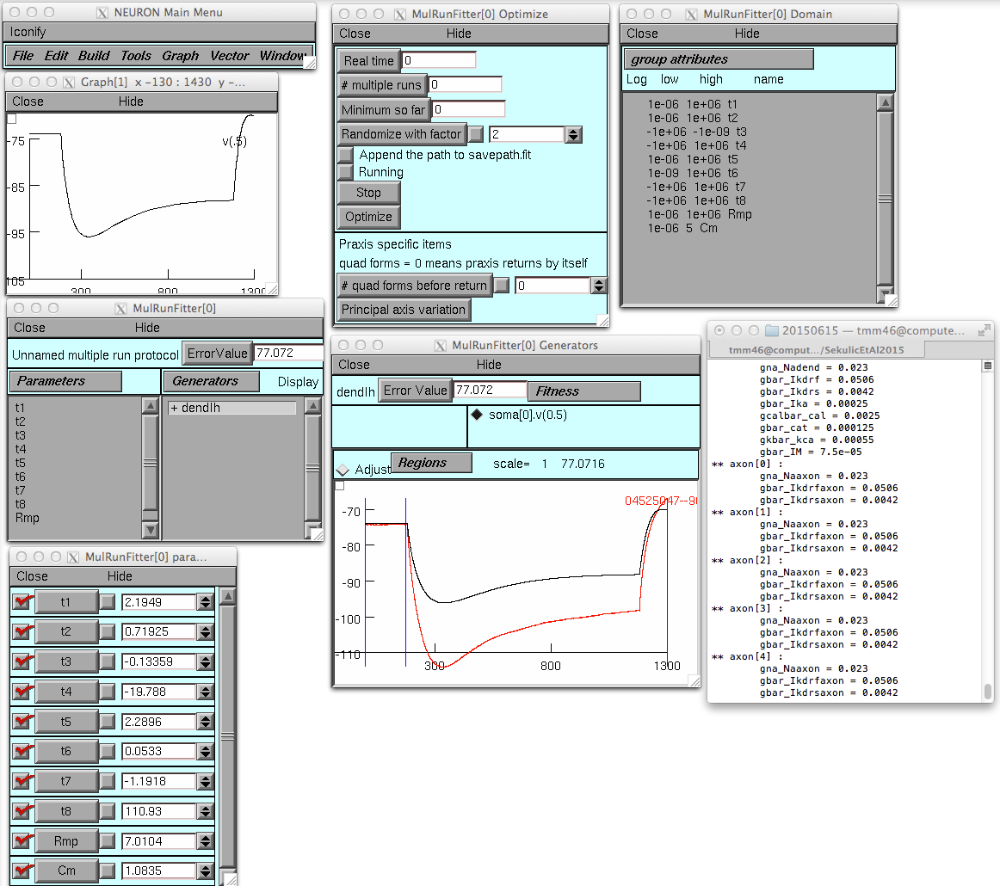
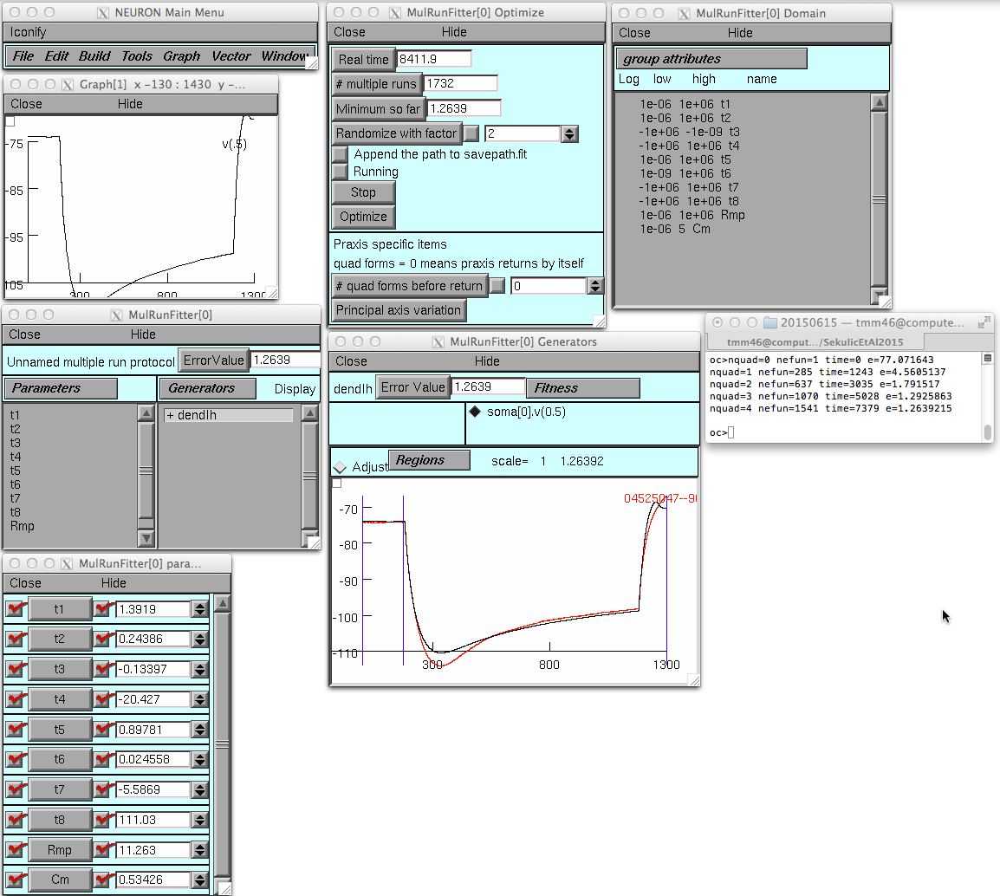

This is the readme for the models associated with the paper:
Sekulic V, Chen TC, Lawrence JJ, Skinner FK (2015) Dendritic
distributions of I h channels in experimentally-derived
multi-compartment models of oriens-lacunosum/moleculare (O-LM)
hippocampal interneurons. Front Synaptic Neurosci 7:2
These files were contributed by V Sekulic.
This model will also be available in Open Source Brain
(http://opensourcebrain.org).
-----------
MODEL USAGE
-----------
Before running the model, compile the mod files appropriately, according
to your operating system. For example, in Unix/Linux, run the ``nrnivmodl''
command from within the top-level model directory.
Then run one of the provided bash scripts in order to load the parameters for
one of the four models used in the Sekulic et al. (2015) paper, as follows:
Model R3: ./startup_R3.sh
Model R4: ./startup_R4.sh
Model S3: ./startup_S3.sh
Model S4: ./startup_S4.sh
Following that, fitted parameters as per Sekulic et al. (2015) may be loaded
by calling the ``load_file'' function in NEURON, providing as argument one
of the .ses files in one of the two subdirectory trees:
04525047--90nA
04610022--90nA
The directories correspond to fitted session files against the experimental
O-LM current clamp recordings for, respectively, cell 4525#4 and 4610#2 (as
described in the Sekulic et al., 2015 paper).
The filenames for the session files provide information as to what part of
the Sekulic et al. (2015) paper they were used for. For instance, the file
04525047--90nA/uniform-RmGr/dendIh_uni_RmCmTau_Starfish_hD1_3.ses
was obtained as part of the fitting procedure for uniform ("uni") dendritic
Ih distributions for the Starfish morphology (S3) with dendritic Ih
("hD1"). See ``Session Filename Legend'' below for a catalogue of the
filename elements to aid in identification of any given session file.
This session (see figure 3 in the paper) starts with these settings:

and then after the optimize button is pressed (takes 140 minutes to
run on a MacBookPro):

The experimental recordings used for the fitting procedures were obtained from
the following paper:
Lawrence, J.J., Statland, J.M., Grinspan, Z.M., and McBain,
C.J. (2006). Cell type-specific dependence of muscarinic signalling in
mouse hippocampal stratum oriens interneurones. J. Physiol. 570,
595–610. doi:10.1113/jphysiol.2005.100875
The maximum conductance densities of the four models (R3, R4, S3, and S4)
were selected from highly-ranked models in the ensemble modelling approach
done as part of the following paper:
Sekulic, V., Lawrence, J.J., and Skinner, F.K. (2014). Using Multi-compartment
ensemble modeling as an investigative tool of spatially distributed biophys-
ical balances: application to hippocampal Oriens-Lacunosum/Moleculare
(O-LM) cells. PLoSONE 9:e106567. doi:10.1371/journal.pone.0106567
-----------------------
SESSION FILENAME LEGEND
-----------------------
General structure of filenames (all caps correspond to modifiable elements):
dendIh_DISTRIB_FITS_MORPHOLOGY_DENDIH_PARAMSET.ses
The elements can take on the following values:
Element Meaning Possible values
--------------------------------------------------------------------------
DISTRIB The distribution of Ih used uni - uniform
sig - sigmoidal
lin - linear
FITS Which passive properties Rm - specific membrane resistivity
were fitted (additive; so Cm - specific membrane capacitance
multiple values mean each Tau - time constant of activation of Ih
corresponding property was Sf - scaling factor (for initial Gh)
allowed to vary).
MORPHOLOGY Which reconstructed model Richy - "cell 1" in Sekulic et al (2015) paper
morphology was used (these Starfish - "cell 2" in Sekulic et al (2015) paper
were obtained from the
Lawrence et al 2006 paper)
DENDIH Whether dendritic Ih was hD0 - no dendritic Ih (only somatic Ih)
present hD1 - somatodendritic Ih present
PARAMSET Which rank of the model 3 - rank 3 of the Richy or Starfish database subsets.
database from Sekulic et 4 - rank 4 of the Richy or Starfish database subsets.
al (2014) the maximum
conductance densities of the
ionic conductances were
obtained from. Used in
conjunction with the morphology
to determine the model from
the database, e.g., R3, S4.
------------
CONTACT INFO
------------
For questions or clarification, please email the primary author of the
associated paper, Vladislav Sekulic, at vlad.sekulic@gmail.com